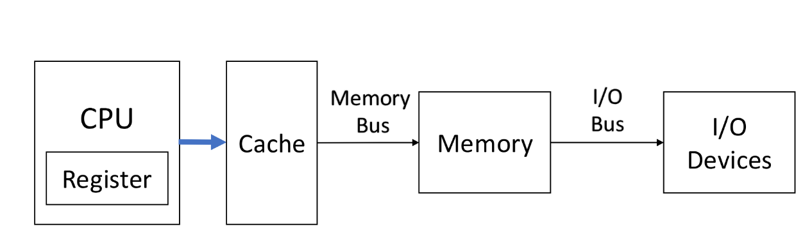
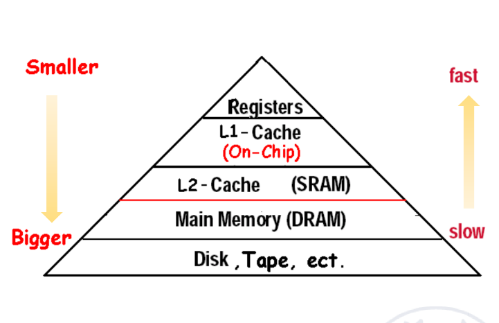
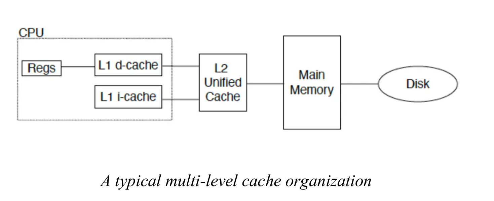
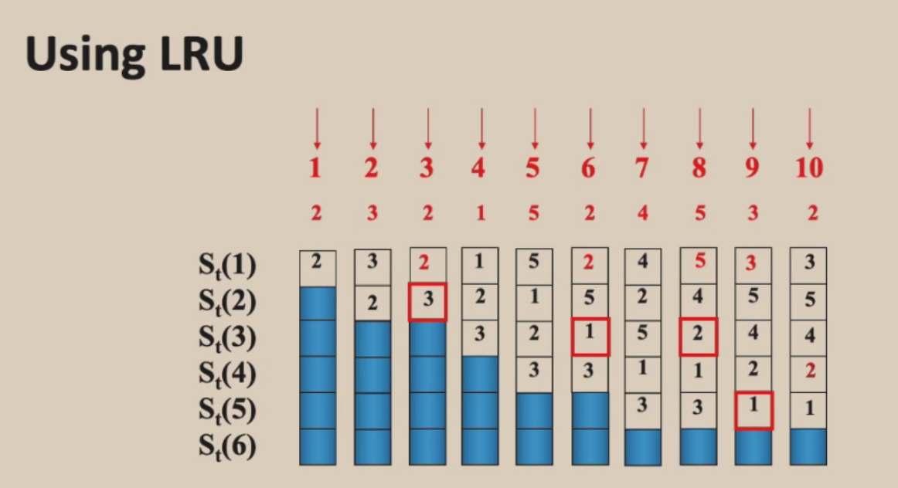
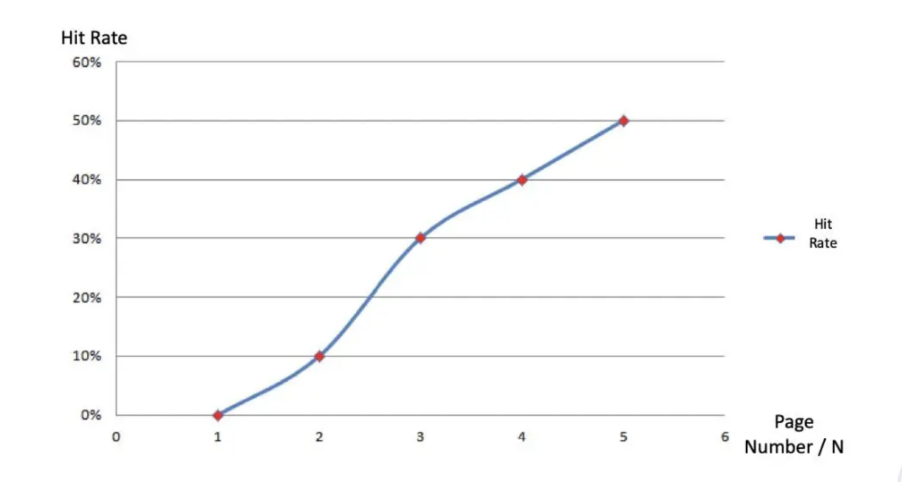

Memory Hierarchy¶
局部性¶
内存的局部性主要体现在两个方面：
时间局部性：如果某个数据项被引用，那么它很可能在不久之后再次被引用。
空间局部性：如果某个数据项被引用，那么与其地址相邻的数据项也很可能很快被引用。
层次结构¶
计算机系统的存储结构可以分为四层：分别是Registers，Cache，Memory，Storage。
它们的存储容量依次递增，但是访问速度却逐渐减慢。
不同的计算机系统对存储的要求不同，但它们的层次结构都是类似的。


Cache¶
Cache是位于CPU与主存之间的高速存储器，用来存储最近访问过的数据。是地址离开处理器后遇到的最高或第一级存储器层次结构。

Cache Hit/Miss：当CPU需要访问的数据在Cache中时，称为Cache Hit。不在Cache中，需要从更低一层的 Memory Hierarchy 中读取的情况称为Cache Miss。这两种情况对应的比例被称为hit rate和miss rate。
我们在设计Cache时需要尽可能降低miss rate，并降低从Memory Hierarchy中读取数据的miss penalty。
Block/Line：数据需要按照一定的规则从主存映射到cache。一般把主存和cache分割成一定大小的块，这个块在主存中称为data block，在cache中称为cache line。当cache从主存中读取数据时，就会以cache line为单位进行读取。
缓存未命中的原因有三个：
- Compulsory：首次访问某个块
- Capacity：块被丢弃后又被重新取回
- Conflict：程序反复访问来自不同块但映射到缓存中同一位置的多个地址
缓存未命中所需的时间取决于：
- 延迟（Latency）：获取块中第一个字的时间
- 带宽（Bandwidth）：获取块中剩余字的时间
其实我们可以将缓存和内存的关系应用到任意两个相邻的存储层次结构之间。如：
- 寄存器是变量的“缓存”
- 一级缓存是二级缓存的缓存
- 二级缓存是内存的缓存
- 内存是磁盘的缓存（虚拟内存）

一个典型的cache结构如下：

Unified Cache：所有内存请求都通过一个统一的缓存处理。这种方案硬件需求较少，但性能也较低。
Split I&D cache：指令和数据分别使用独立的缓存。这种方案使用额外的硬件，但也有一些简化（指令缓存为只读）。
在设计cache时，一般要考虑以下问题：
- 数据块可以放在上层/主存的什么位置？（块放置策略）
- 如何在上层/主存中找到某个数据块？（块识别方式）
- 缓存/主存未命中时，应替换哪个数据块？（块替换算法）
- 写操作时如何处理？（写策略）
块放置策略¶
直接映射¶
直接映射是将每个数据块映射到唯一的地址。（如采取“取模”的方式进行一对一映射）
这里 Cache Line 具有 Tag 和 Data 两部分，Tag 用于识别存储的是主存中的哪个 Data Block，Data 用于存储数据

这种方法实现简单，但cache的利用率较低，容易产生cache miss。
全相联映射¶
全相联映射是每个数据块可以映射到任何一个的地址。
 它使得cache的利用率很高，且不容易产生cache miss。但由于难以查找，它的硬件实现较为复杂。
它使得cache的利用率很高，且不容易产生cache miss。但由于难以查找，它的硬件实现较为复杂。
组相联映射¶
组相联映射是首先将cache分成若干各组，将数据块按一定规则映射到组中（如取模），在组中采取全相联映射的方式。
若一个组中有n个块，我们就把这种映射方式称为n路组相联映射。

相联度越高，缓存空间的利用率越高，块冲突的概率越低，缺失率也越低。但在多数情况下，\(n\leq 4\)

块识别方式¶
每个块都有一个地址标签，用于存储该块中所存数据的主存地址。
当检查缓存时，处理器会将请求的内存地址与缓存标签进行比较，如果两者相等，则发生缓存命中，数据存在于缓存中。
通常，每个缓存块还有一个有效位，用于指示该缓存块的内容是否有效。
物理地址主要包含三块：
-
索引字段（Index） 用于选择
- 在组相联缓存中选择对应的组
- 在直接映射缓存中选择对应的块
- 对于组相联缓存，其位数为
log2(组数)；对于直接映射缓存，位数为log2(块数)
-
字节偏移字段（Offset） 用于选择
- 块内的字节
- 位数为
log2(块大小)
-
标签（Tag） 用于在某一组内或整个缓存中找到匹配的块或者检测找到的块是否匹配。
- 位数为
地址长度 – 索引长度 – 字节偏移长度
- 位数为

以下是查找块的过程：


以下是有关cache计算的两个例子：


缓存控制¶
我们一般用一个有限状态机来实现缓存的控制。
以下是一个典型的缓存控制状态机：

块替换算法¶
在引入块替换算法之前，我们需要先了解cache miss的处理过程。
- 将初始程序计数器（PC）的值发送给内存。（即 PC-4）
- 指示主存储器执行读取操作，并等待内存完成访问。
- 写入缓存条目：将从内存获取的数据存入条目的数据部分，将地址的高位（来自算术逻辑单元 ALU）写入标记字段（tag field），并将有效位（valid bit）置为 1。
- 从第一步重新开始指令执行，这会重新取指，本次将能在缓存中找到该指令。
cache miss由于需要访问主存，因此会导致延迟。为了减少cache miss，我们需要选择合适的块替换算法。
在直接映射缓存中，只有一个缓存块可以被替换，直接替换即可。
在组相联缓存和全相联缓存中，有 \(N\)个缓存块（其中 \(N\) 代表相联度），所以需要决定哪个块被替换。
常用的块替换算法有以下几种：
- 随机替换
- 是最简单的块替换算法。
- 它的优势是硬件实现简单，仅需一个随机数生成器，且能在缓存中均匀分配空间。
- 随机替换可能会逐出即将被访问的缓存块
- 最近最少使用（LRU）
- 选择最近最少访问（最近未使用）的块进行替换。
- 它的选择原理是假设最近被访问过的缓存块，更有可能被再次引用。
- 它需要在缓存中额外增加比特位来记录访问情况。
-
先进先出（FIFO）
- 选择最先进入缓存的块进行替换。
- 它的选择原理是假设越近进入缓存的缓存块，更有可能被再次引用。
-
最优算法（Optimal）
- 它是一种理想的算法，它的实现前提是我们已经知道整个程序的执行顺序。
- 它会评估后续未执行序列中哪个块最远再次被访问（或只被访问一次），并将其替换。
命中率与程序的执行序列有关，如颠簸序列会导致命中率极低。

同时，命中率还有cache的大小有关。

我们引入栈替换算法（Stack replacement algorithm）的概念，它要满足：
- \(Bt(n)\) 表示在时刻 \(t\)，大小为 \(n\) 的缓存块中所包含的访问序列集合。
- \(Bt(n)\) 是 \(Bt(n+1)\) 的子集
LRU属于栈替换算法，而FIFO算法不属于栈替换算法。


栈替换算法可以通过增加cache的大小来提高命中率。


而非堆栈型算法则不一定有这个规律。

那我们如何用硬件实现LRU呢 我们可以用比较对算法（Comparsion Pair Method）来实现LRU。它的基本思想是将每个缓存块两两配对，使用比较对触发器（comparison pair flip-flop）记录该对中两个缓存块的访问先后顺序，再通过门电路组合所有比较对触发器的状态，从而依据 LRU 算法找出需要被替换的缓存块。
假设有三个缓存块（A、B、C），可组合成 6 对（AB、BA、AC、CA、BC、CB）。其中 AB 与 BA、AC 与 CA、BC 与 CB 是重复的，因此只保留 AB、AC、BC 这三对。
每对的访问顺序分别用 “比较对触发器” \(T_{AB}\)、\(T_{AC}\)和\(T_{BC}\) 表示。
- \(T_{AB}=1\)表示 \(A\) 比 \(B\) 最近被访问过；
- \(T_{AB}=0\)表示 \(B\) 比 \(A\) 最近被访问过；
- \(T_{AC}\) 和 \(T_{BC}\) 的定义与此类似。
若最近被访问的缓存块为 \(A\)，且最久未被访问的缓存块是 \(C\)，则三个触发器的状态必须分别为：\(T_{AB}=1\)、\(T_{AC}=1\) 且 \(T_{BC}=1\)。
若最久未被访问的缓存块 \(C\) 将被替换。据此可推导出以下布尔代数表达式：
\(C_{LRU}=T_{AB}⋅T_{AC}⋅T_{BC}+\bar{T}_{AB}⋅T_{AC}⋅T_{BC}=T_{AC}⋅T_{BC}\)
\(B_{LRU}=T_{AB}⋅\bar{T}_{BC}\)
\(A_{LRU}=\bar{T}_{AB}·\bar{T}_{AC}\)
我们就可以设计出对应的硬件元件：

设 \(p\) 为缓存块数量，由于每个缓存块都可能被替换，需要用一个与门（AND gate）来生成其替换信号，因此与门的数量等于 \(p\)。
每个与门接收来自相关比较对触发器的输入，因此每个与门的输入数量为 \(p−1\)。
若缓存块数为 \(p\)，按两两组合计算，比较对触发器的数量应为组合数\(C_{p}^2\)。
随着\(p\)的增大，硬件的需求量会急剧增加，导致设计难度加大。所以缓存块的数量不能过多。

写策略¶
写数据是有两种情况：write hit和write miss。
其中write hit时的写策略主要分为两种：write-through和write-back。
write-through是指在写命中时，数据同时写入缓存和主存，主存始终保存最新数据。它确保强数据一致性。常应用于对数据完整性要求极高的场景（如飞行控制系统等实时系统）。
write-back是指在写命中时，数据只写入缓存，并不立即写入主存。当缓存中被修改的“脏块”被替换时，才将其写入主存。它使用脏位来记录修改情况，，用于指示缓存中的数据已被修改但尚未写回主存。有助于减少内存带宽的使用。常应用于（通用处理器（如台式机 CPU）等适用于优先考虑性能的场景）。
write miss时的写策略也有两种：write allocate和no-write allocate。
write allocate是指在写未命中时，系统将未命中的块从主存加载到缓存中，然后在缓存中执行写操作。它利用空间局部性和时间局部性，以优化后续访问。常与write-back结合使用。
no-write allocate是指在写未命中时，系统不将未命中的块从主存加载到缓存中，而是直接执行写操作，并将数据直接写入主存。数据不存入缓存，可避免一次性或非频繁写入操作导致的缓存污染。常与write-through结合使用。
采用write-through策略时，CPU 必须等待写入操作完成而发生的停顿。为避免写入时发生停顿，许多 CPU 采用写缓冲区，即一个用于暂存write-through数据的小型缓冲区，使 CPU 能够继续执行，而无需等待内存写入完成。

这种方法可减轻write-through策略带来的性能损失。但若突发写入的数据量超过缓冲区容量，仍可能发生停顿，因此无法完全消除停顿现象。
如下是两种写策略对应的cache写和读的综合流程图：

*Cache漏洞¶


Cache Performance¶